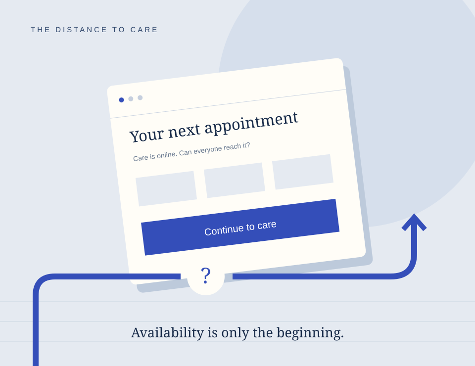

Research commentary · Health systems
When digital access becomes a barrier to care
An appointment exists online. Can everyone reach it? Examining the distance between offering healthcare and making it accessible.
Read the articleA publication of Beyond Borders
Evidence, perspectives, and the questions that move refugee health forward.

Research commentary · Health systems
An appointment exists online. Can everyone reach it? Examining the distance between offering healthcare and making it accessible.
Read the articleNo articles match your search. Try another word or choose “All articles.”
Join the conversation
We welcome proposed responses from researchers, clinicians, community practitioners, and people with lived experience of displacement.
About Common Ground
Common Ground is a publication by Beyond Borders examining displacement and health through research commentary and informed perspectives.
We link to original sources, distinguish findings from interpretation, and explain what the evidence cannot establish.
Read our editorial standards ↗